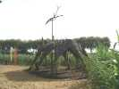
Tours, dans le fief de Michel Gressier, au parc de la Gloriette avec ses constructions et ses intéressants jardins très variés mais pas toujours nickels en fin de saison...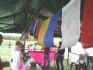
Avant tout, le bar a été installé, avec ses mantras tibétains qui émettront constamment des prières pour les consommateurs ! Les participants ont été dotés d'un tchador roulé qu'ils portent comme ils veulent...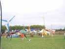
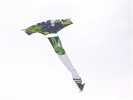
Sylvie Perry et Arnold sont là de bonne heure et sortent dans un vent pas très affirmé leurs CVs relativement légers. Celui créé pour le concours de Dieppe, genre Faga à queue en traîne...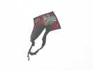
...ou le delta plus ancien et plus connu...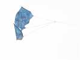
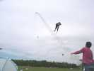
Pour les trains, on en voit d'abord sortir un transparent !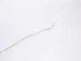
Ensuite de petits Eddies blancs...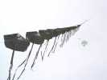
Et pour finir, un train noir. Mais on n'arrive pas à le décoller... Alors, alors ? Hé bien, on accroche le train noir à la suite des autres, et là, ça monte, et ça fait un grand train !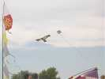
Wang Zhushang fait voler son aigle chinois en bambou et soie peint à la main. Mais le vent est quand même encore un peu juste...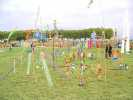
Au sol, Jean-Claude et Antoinette ont planté leur jardin de bouteilles découpées et tiendront chaire et boutique !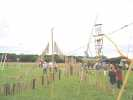
Michel Darnis et Louisette ont planté ce décor de bois flottés que vous avez dû découvrir dans le Weba 2004, mais le reportage n'est plus en ligne...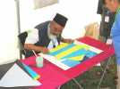
Dans la boutique indienne, Abdul prépare avec sa minutie et son talent habituels des cerfs-volants bambou-papier !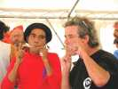
Et Dom' et son collègue offrent un concert de guimbardes (ils en vendent, mais le concert est gratuit...).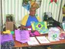
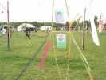
Dans les JdVs, Ulla a bien sûr comme les autres sa petite fiche exposée !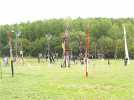
Ses jardins dessinent sur le sol des signes spiralés et cabalistiques !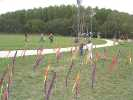
Les Hurricane ont monté leur jardin de panaches où les enfants prennent plaisir à courir en zigzag !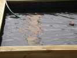
Didier prépare un bassin où se reflèteront ses oeuvres.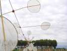
De petites éoliennes en bambou et parchemin montées "en train" sur leur ficelle !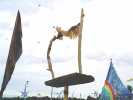
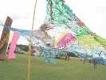
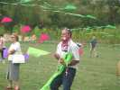
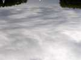
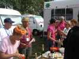
De bonnes âmes ont été suggérer à Joël de faire un pot pour fêter son premier prix à Dieppe, il n'y a pas manqué !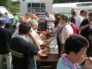
C'était même un pot généreux, et, avec les invitations et le bouche à oreilles, on a fini par être nombreux !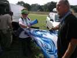
On a fêté en même temps l'anniversaire de Claudine. Elle a eu droit à un beau cadeau de Claude : un rokkaku de Michel, une pièce quasi-unique !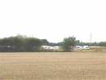
Le festival concurrent s'était implanté à côté, comme d'habitude...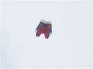
Christophe a monté son flow-form "Bécotisé" (en anglais sur Internet : Becotized !) pour faire de la photo. Je ne sens pas le propriétaire encore complètement convaincu sur le principe...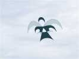
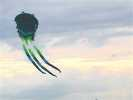
On a pu voir aussi un trilobite, du côté des gonflables...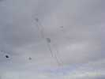
Et Michel Sollin présentait plusieurs cerfs-volants légers et géniaux, comme ce couple : un bras comme un mobile, 2 CVs légers pour faire les têtes, et 2 corps en laine rouge astucieusement maintenus...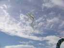
... ou cette bicyclette, avec un cycliste qui pédale... quand il y a assez de vent !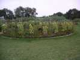
Dans les "vrais" jardins, des massifs comme ce grand ovale, entouré d'une espèce d'aubergine ronde...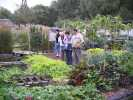
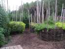
Ces énormes paniers supportent des légumes, tomates, haricots, pommes de terre...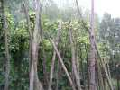
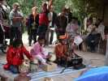
En attraction, le soir, les "Gitans Dhoad du Rajasthan", musiciens émérites... Abdul et les autres Indiens sont aux premières loges !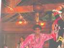
Le danseur danse avec sur la tête 4 verres superposés et une cruche... pleine qui doit bien faire ses 15 kg !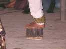
Après la tête, ce sont les pieds qui souffrent, il danse sur des sabres (pas très coupants) et sur cette petite (oui, mais plus elle est petite, plus c'est dur !) planche à clous !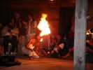
Il opère aussi comme cracheur de feu !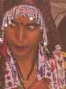
La belle danseuse Rajasthannaise portait un somptueux et lourd costume brodé de perles...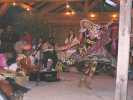
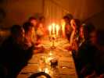
Pour le dîner, tous les participants avaient été priés d'amener leurs bougies. Claude a vu large, il a carrément pris le chandelier !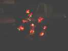
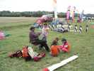
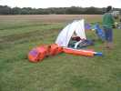
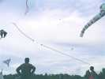
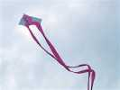
On a encore vu bien des créations, comme ce delta de forme assez originale, "coeur croisé"...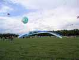
Et le vent s'est levé progressivement, l'escargot a pu prendre de la hauteur, et les "étoles" ont pu se stabiliser, bien bandées...